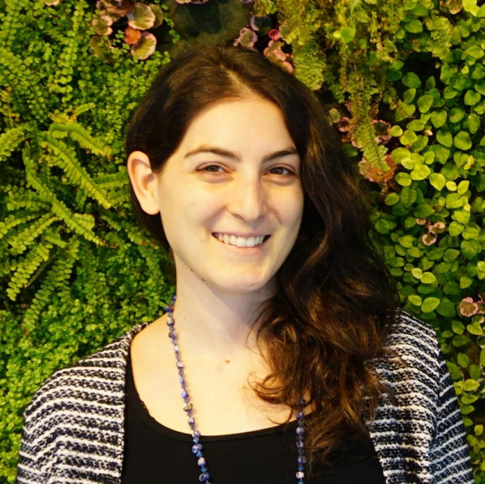

Panel Debate - Using Computational Social Science for the Sustainable Development Goals
Time and location
July 18, 13:00-14:00, Room C (Henrik Dam Auditorium)What is it?
The 2030 Agenda for Sustainable Development, adopted by all United Nations Member States in 2015, constitutes a blueprint of the numerous challenges that society is facing. From ending poverty, hunger, and gender inequality, to combating climate change and building sustainable cities. To reach the 17 Sustainable Development Goals (SDGs) by 2030, governments and international organizations need to be able to monitor progress, estimate the impact of potential interventions, and make forecasts on how the situation is likely to evolve. To lift this burden, scientific communities, NGOs and international development agencies are extensively exploring how computational techniques from Big Data, Machine Learning (ML), and Artificial Intelligence (AI) can be used to address these challenges. However, several challenges and limitations have been encountered, from data representativeness and bias, to models not being robust, explainable, or transparent. Further, the gap between the academic world and the organizations that could use the proposed methods and insights for their programmatic purposes is still wide. The aim of this panel debate is to bring together experts from various fields to discuss the potential of CSS for addressing the societal challenges framed by the SDGs. We will convene experts from both academia and the developmental sector to discuss where and how computational techniques can be applied to address these societal problems, and when computational methods fall short for evidence-based policy-making.Speakers
Host: Vedran Sekara
IT University of Copenhagen
Paddy Brock
World Bank and UNHCR Joint Data Center

Kyriaki Kalimeri
ISI Foundation Torino
Kelton Minor
Columbia University

Elisa Omodei
Central European University
- Paddy Brock is a Senior Data Scientist at the World Bank UNHCR Joint Data Center on Forced Displacement (https://www.jointdatacenter.org/), where he works with UNHCR and World Bank HQ, Regional and Country teams to generate and improve socioeconomic data on forced displacement to better inform operations, policy and research. The JDC acts as a catalytic bridge between its parent organizations, filling data gaps and deepening analysis. Paddy works on data curation and dissemination, the use of alternative data sources and advanced analytics, and data responsibility. Previously, Paddy lead a cross-divisional team of analysts at the UK Foreign Commonwealth and Development Office, supporting multiple policy areas, including the Sustainable Development Goals. He worked as the Statistics and Evaluation Lead for the UK Department of International Development (DFID) office in the Democratic Republic of Congo, and as a Data Scientist he helped build DFID’s data handling and analytical capability. Paddy’s background is in research, where he carried out quantitative analysis for drug discovery, epidemiology, and disease ecology.
- Kyriaki Kalimeri's research focuses on machine learning for human behavior understanding with applications in the humanitarian sector. She collaborates with NGOs worldwide, leveraging insights from digital data to inform policy makers on fundamental drivers of people's decision-making processes towards controversial social phenomena. She began her academic journey at the Technical University of Crete, where she received her Diploma in Electrical and Computer Engineering, specializing in Telecommunication Systems. Pursuing higher education, Kalimeri earned her Ph.D. from the University of Trento under the supervision of Dr. Fabio Pianesi on Cognitive and Brain Sciences, focusing on the automatic prediction of personality from multimodal data, while she was a visiting scholar at the Human Dynamics Group at the MIT Media Lab, under the supervision of Prof. Alex 'Sandy' Pentland. She is an active participant in the academic community, with a special focus on the empowerment of young researchers in the humanitarian AI field. Since 2018 she is a mentor of the Lagrange Scholarship program while organizing several workshops, conferences, and tutorials including the Data for the Wellbeing of the Most Vulnerable workshop at the International Conference on Web and Social Media.
- Kelton Minor applies tools from computational social science and spatial data science to study and inform how humans adapt to planetary risks and climate hazards. As a postdoctoral research scientist, he is currently working on several projects that bridge between Columbia University's Data Science Institute and Climate School to identify how meteorological and climate stressors impact human outcomes at scales ranging from communities to continents. He is a member of The Lancet Countdown on Health and Climate Change’s Working Group 1, and is developing global indicators to monitor social responses to local climate extremes across nearly every county worldwide. Kelton received a Ph.D. in Planetary Social and Behavioral Data Science at the Copenhagen Center for Social Data Science (SODAS), a transdisciplinary research environment at the University of Copenhagen. He was an EliteForsk visiting researcher at the University of California Berkeley’s Global Policy Laboratory, a US-Denmark Fulbright grant recipient, and received his M.S. in Human Environment Relations from Cornell University.
- Elisa Omodei Elisa Omodei is an Assistant Professor at the Department of Network and Data Science at the Central European University. She holds a BSc and a MSc in Physics from the University of Padua and Bologna, respectively, and a PhD in Applied Mathematics for the Social Sciences from the École Normale Supérieure (ENS) of Paris. After her postdoctoral training, she spent over four years at the United Nations, first at UNICEF's Office of Innovation in New York and then at the UN World Food Programme (WFP) in Rome, where she lead the data science team that developed the HungerMap LIVE (hungermap.wfp.org), WFP’s global hunger monitoring system. In her research, she explores how complexity, network and data science can help us address the needs of the most vulnerable populations and monitor progress towards the UN Sustainable Development Goals. She also served as Vice-President Secretary of the Complex Systems Society from 2018 to 2021.
Too Lazy to Read the Paper LIVESHOW EXTRAVAGANZA edition!
Time and location
July 19, 13:00-14:00, Room C (Henrik Dam Auditorium)What is it?
The five star rated (by Sune’s mom) science podcast comes to you LIVE from IC2C2. In this star-studded episode we will - as always - be probing the the minds of scientists. We will squeeze 3 superstar guests into a jam-packed 1 hour session, and ask each one about things like: their favorite paper, their favorite paper by another scientist, and their worst experience in science.Speakers
Host: Sune Lehmann
DTU Compute, Technical University of Denmark
Maximilian Schich
Tallin University
Claudia Wagner
Aachen University

Duncan Watts
University of Pennsylvania
IC2S2 Town Hall Meeting
Time and location
July 20, 13:00-14:00, Room A (Niels K. Jerne auditorium)What is it?
The organizers of this year's edition will give a brief account of the event organization and will intoduce a few points of discussion about the future of IC2S2. There will be ample space for participants to ask questions and to provide their feedback.Hosts
Host: Duncan Watts
University of Pennsylvania - President of ISCSS Board of Directors

Host: Laura Alessandretti
Technical University of Denmark - IC2S2'23 General Chair

Host: Luca Maria Aiello
IT University of Copenhagen - IC2S2'23 General Chair